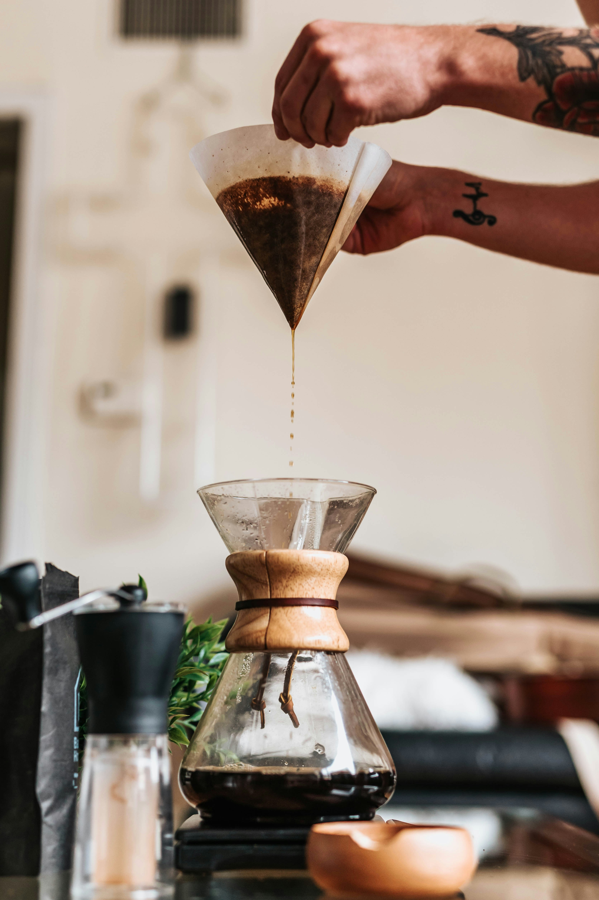

V60
FILTRADO · 3 MINUTOSFiltrado por goteo con molienda media. El agua cae despacio sobre el café durante tres minutos y arrastra notas limpias y brillantes. Es ideal para descubrir la personalidad de un grano nuevo.
$7.00 USD